手势交互解决方案说明
编译和部署
使用aiexpress源码包编译并生成x3部署包：bash build.sh x3 && bash deploy.sh
解决方案的板端部署和功能说明
功能列表
web展示视频和智能结果的渲染
pc上使用potplayer等软件展示视频（无智能结果的渲染）
安卓APK启动X3并展示视频和智能结果的渲染
hdmi展示视频和智能结果的渲染
存储智能结果渲染的视频或存储原始视频（h264编码格式视频）
通过回灌测评算法指标
存储原图（pym第0层的nv12图）
竖屏模式
存储智能结果渲染的每帧图片（jpeg编码格式）
启动脚本说明
部署包的启动脚本是run_tv_uvc.sh
运行脚本时可以带两个参数。
第一个参数用于表示X3是否自启动，不带参数或者参数0表示自启动（sh run_tv_uvc.sh或sh run_tv_uvc.sh 0），1表示不自启动（sh run_tv_uvc.sh
1，只有通过安卓APK启动X3需要设置为1，web和用potplayer等软件渲染都选择0）。
第二个参数表示是否为竖屏模式，不带参数表示横屏模式（如sh run_tv_uvc.sh或sh run_tv_uvc.sh 0），参数vertical表示开启竖屏模式（如sh run_tv_uvc.sh 0 vertical或sh run_tv_uvc.sh 1 vertical）。
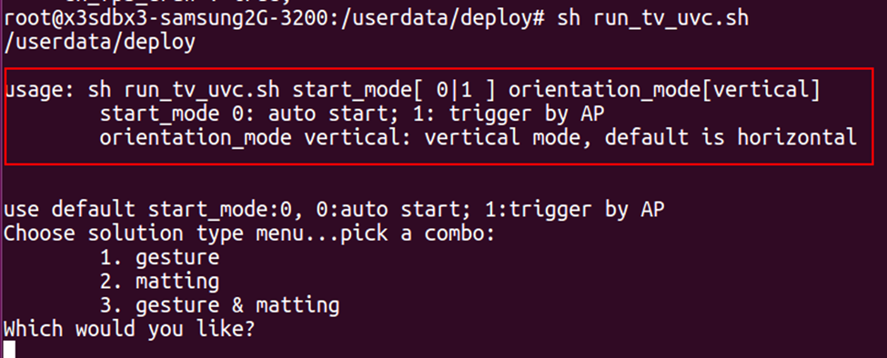
交互界面上选择solution类型，gesture表示只运行手势交互功能，matting表示只运行人体分割功能，gesture & matting表示同时运行手势交互和人体分割功能。
交互界面上选择vio源，single camera表示使用一个单目sensor作为输入，feedback表示回灌输入。
如果选择single camera，交互界面上再选择sensor类型(淘宝售卖选配摄像头为F37)，之后程序开始启动。
如果选择feedback，交互界面上再选择回灌的分辨率1080_fb/2160_fb，以及回灌类型 cache/jpg/nv12/buffer。其中buffer会使用X3的硬件解码器解码，回灌速度快，要求回灌图片为1080p
jpg格式。回灌图片列表为configs/vio_hg/name_jpg.list
详细功能说明
1、web展示视频和智能结果的渲染
（1）配置并启动X3，只能选择gesture模式（web端暂不支持matting渲染），（根据实际情况选择solution类型和输入源） 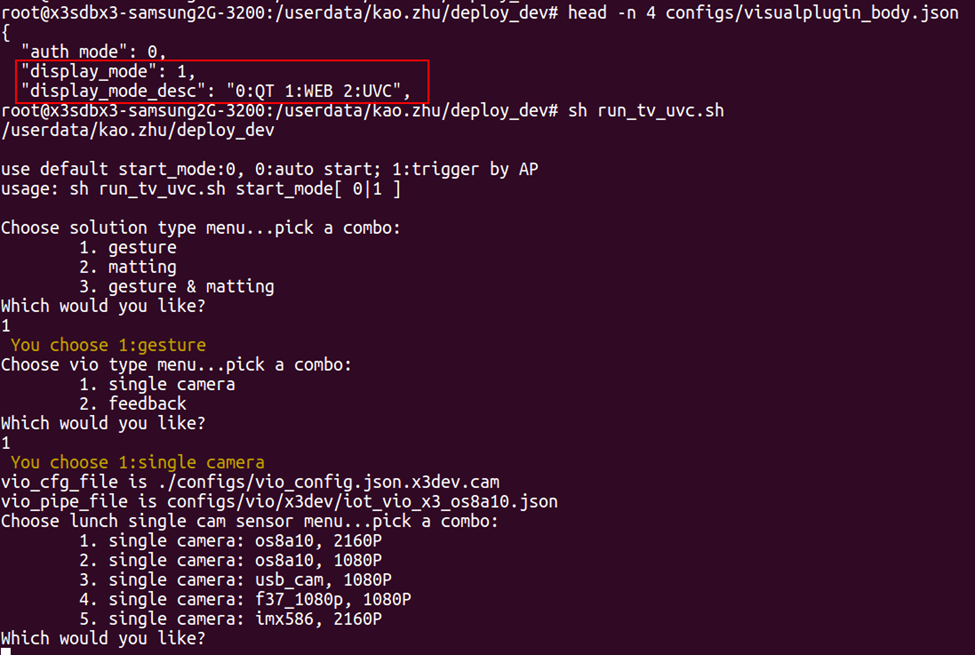
x3端运行成功会有如下log，其他渲染方式相同：
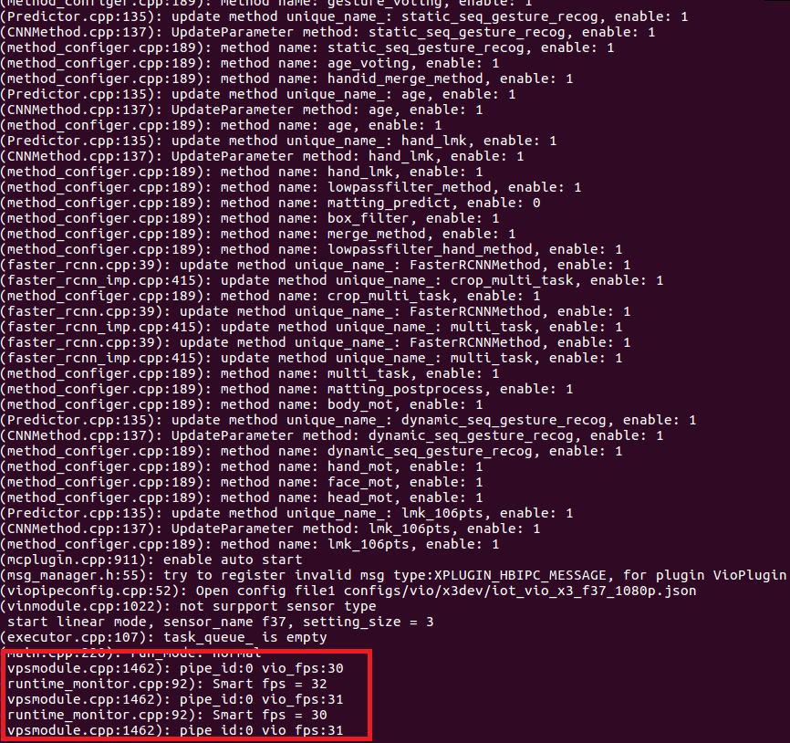
（2）chrom浏览器上输入开发板ip地址展示人脸检测、人体骨骼关键点、手势识别等渲染视频
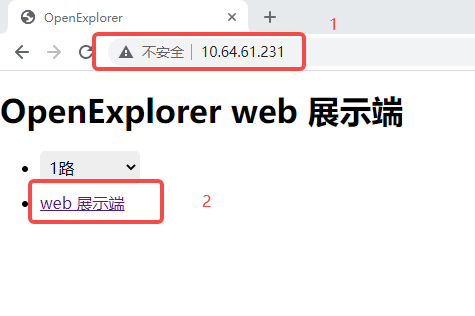
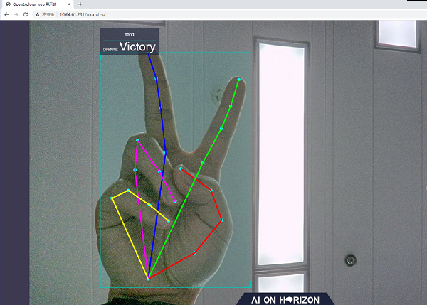
2、pc上使用potplayer等软件展示视频（无智能结果的渲染）
（1）配置并启动X3（根据实际情况选择solution类型和输入源）
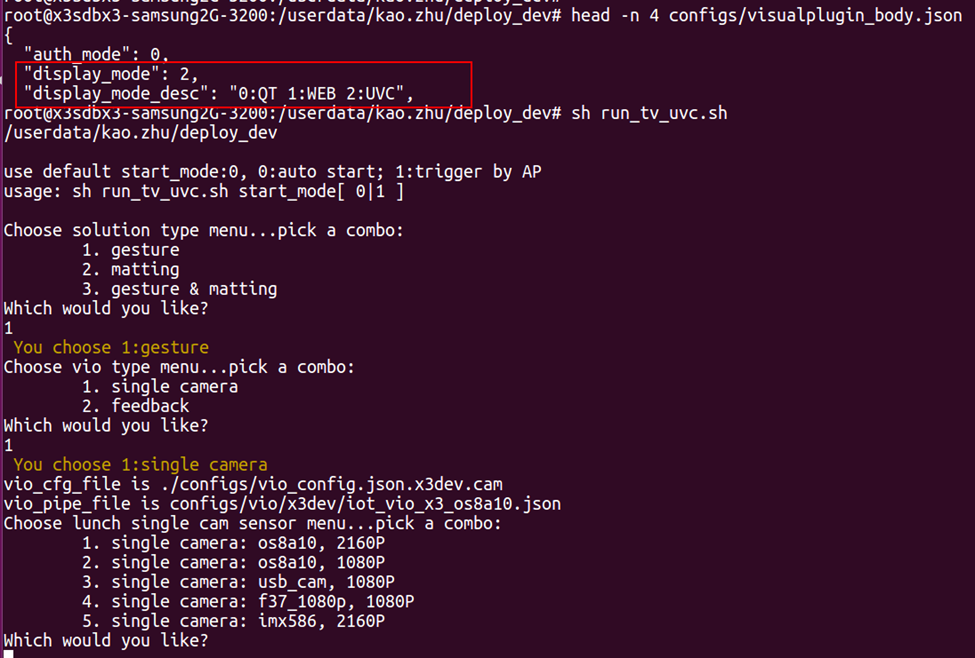
（2）usb线（micro usb+usb2.0公头线或者usb3.0线，注意一些类似线没有数据传输功能，只能充电）连接X3开发板（靠近网口处）和pc后启动potplayer，Alt+D命令选择输入源为uvc并选择分辨率和编码方式后，打开设备即可展示X3输出的编码视频
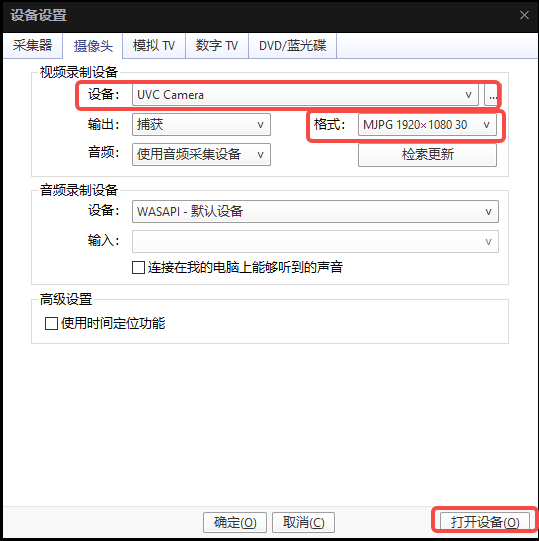
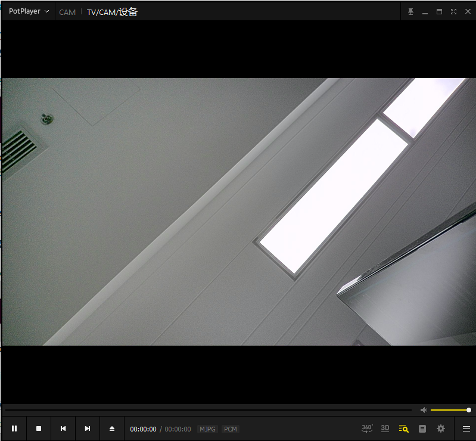
3、安卓APK启动X3并展示视频和智能结果的渲染（支持matting渲染）
（1）配置并启动X3（根据实际情况选择solution类型和输入源，display_mode=2(UVC)）
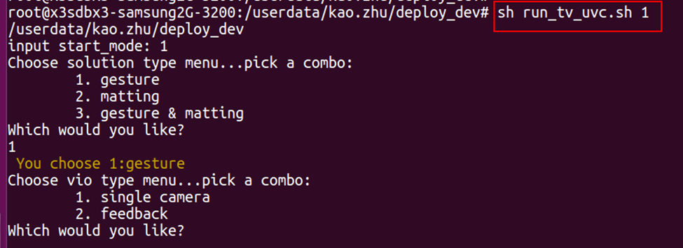
（2）usb线连接X3开发板和安卓开发板，启动app后展示智能渲染视频。APK下载和安装方法见本页面。
4、hdmi展示视频和智能结果的渲染，只能选择gesture模式（HDMI不支持matting渲染）
首先确认x3开发板是否配置为HDMI模式，详情见2.4.7. HDMI节；
（1）配置并启动X3（根据实际情况选择solution类型和输入源）
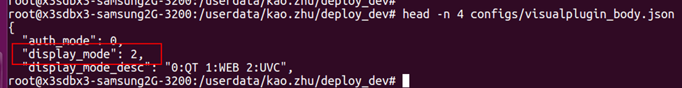
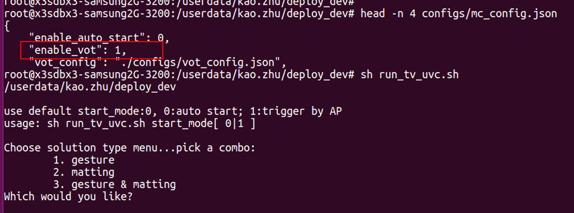
（2）hdmi线连接X3开发板和显示器，展示智能渲染视频。
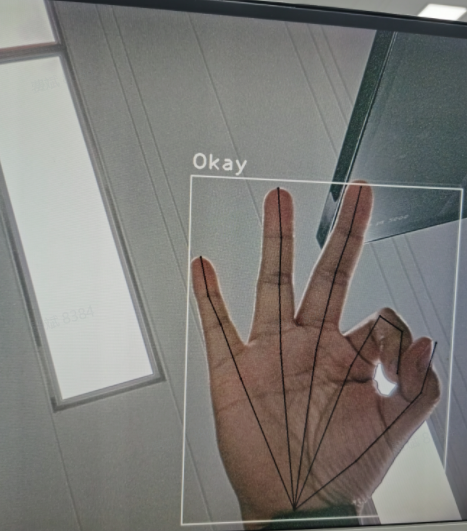
5、存储智能结果渲染的视频或存储原始视频（h264编码格式视频）
（1）配置并启动X3（根据实际情况选择solution类型和输入源）
“encoder_input”: 0表示存储渲染视频，1表示存储非渲染的原始视频。
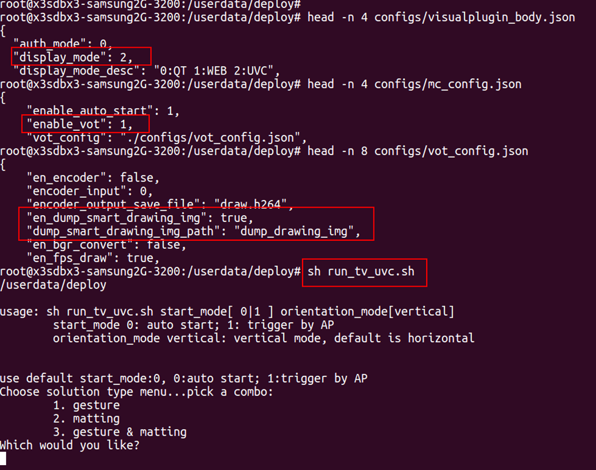
（2）退出程序后，在运行程序路径下生成保存的渲染视频draw.h264文件，使用Potplayer、Elecard等工具可以直接播放draw.h264文件。
6、通过回灌测评算法指标
（1）使用回灌jpeg图片生成namelist：configs/vio_hg/name_jpg.list
（2）更新配置参数
运行脚本./configs/config_setting.sh更新配置，支持配置的设置和恢复。对于回灌测试指标，运行sh ./configs/config_setting.sh 0命令设置参数。
（3）运行程序，选择回灌输入
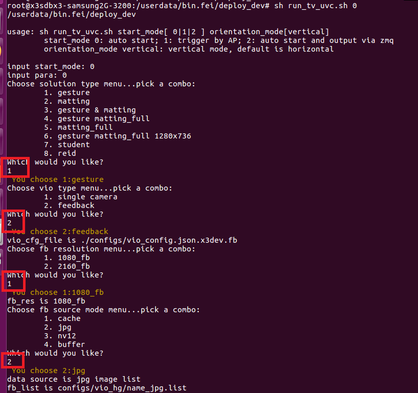
（4）回灌结束后，在运行程序路径下dump_json/路径保存的用于评测的文件，dump_drawing_img/路径存储智能结果渲染后的图片。
“attributeNum” : 0, “bodyDistance” : -1, “bodyID” : 2, “faceID” : -1, “keyPoints” : [ { “confidence” : 0.99803787469863892, “x” : 695.0830078125, “y” : 416.65863037109375, “z” : -1 }, { “confidence” : 0.9971650242805481, “x” : 718.87078857421875, “y” : 390.91305541992188, “z” : -1 }, { “confidence” : 0.99548786878585815, “x” : 671.46099853515625, “y” : 384.28005981445312, “z” : -1
},
……
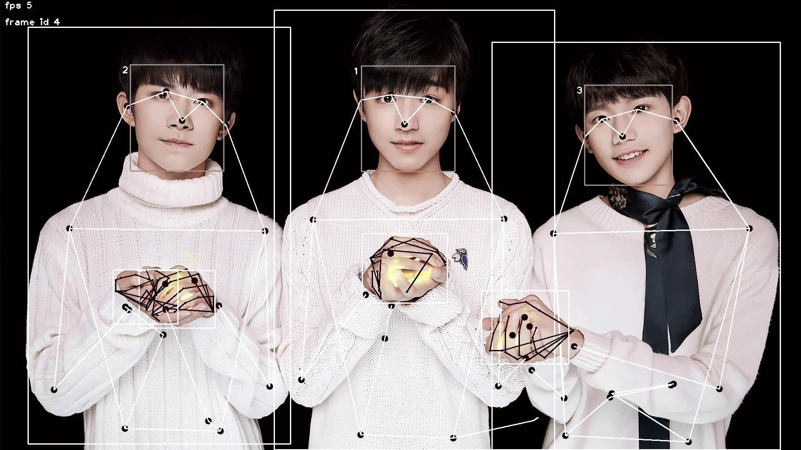
7、存储原图（pym第0层的nv12图）
（1）配置并启动X3（根据实际情况选择solution类型和输入源）
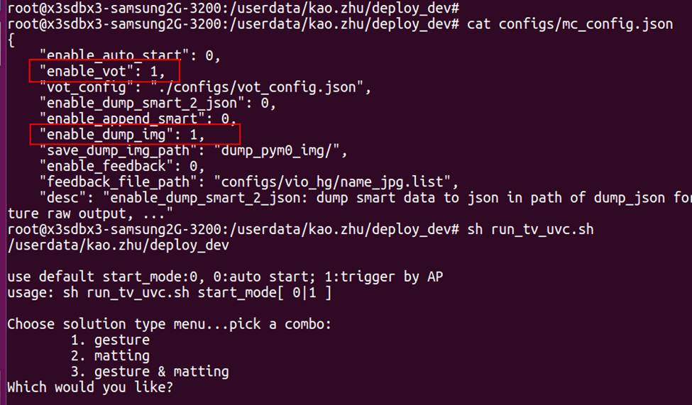
（2）退出程序后，在运行程序路径下dump_pym0_img/路径保存dump的原图
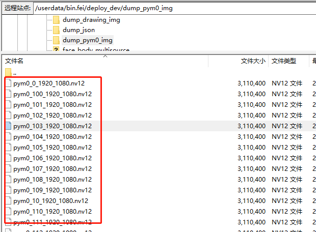
8、竖屏模式
（1）以安卓启动X3模式举例(configs/visualplugin_body.json中display_mode=2,关闭存储原图)
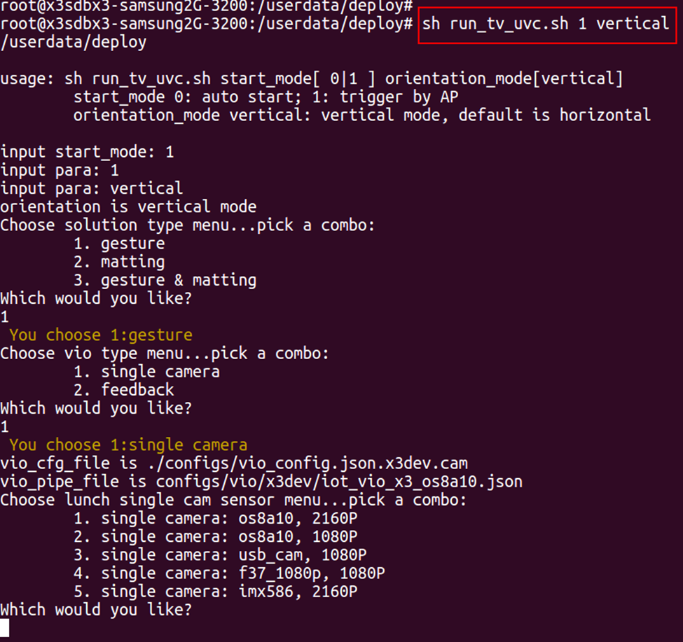
（2）启动命令需要指定参数vertical，其他流程和横屏模式一致。
9、存储智能结果渲染的图片（jpeg编码格式）
（1）配置参数并启动脚本
（2）运行过程中会将渲染图片存储在dump_drawing_img路径下。
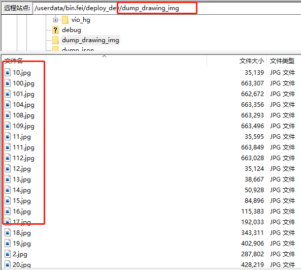
方案设计
系统框图
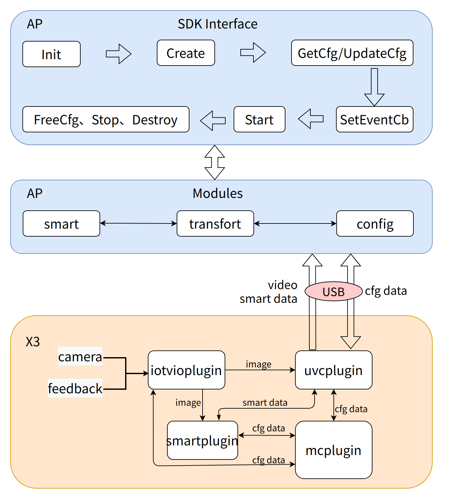
手势交互参考解决方案包括AP和X3侧两部分，一般使用安卓设备作为AP，实现控制X3的启动、退出，接收并渲染X3发送的智能和视频结果。X3侧的功能是处理输入的图像后做算法推理，输出智能和视频结果。
X3侧模块功能说明
uvcplugin
直接和AP交互的模块。智能数据输出使用zmq协议，视频数据输出使用uvc协议。
订阅vio plugin发布的vio msg，将cam采集的图片编码后通过uvc发送到AP。
订阅smart plugin发布的smart msg，将智能检测结果通过zmq协议发送到AP。
接收AP发送的配置数据，发送配置响应到AP。
mcplugin
处理AP请求的启动、停止、参数查询/设置
各个模块的管理
iotvioplugin
将来源于camera的实时视频或者本地回灌的图片处理成vio，发布到xproto总线，用于算法做推理。
smartplugin
创建xstream实例。xstream中根据传入的workflow配置文件创建method实例，并加载模型。
订阅vio msg，使用msg中的图像数据做推理。
将推理结果（xstream输出）序列化输出，发布smart msg。
AP侧模块功能说明
AP侧包含两层，SDK Interface和Modules。
Interface
SDK API的功能实现
Modules
transport模块
实现和X3之间的数据收发。
接收数据时根据数据类型转发到smart和config模块。
如果接收的数据是视频数据，直接数据输出到Interface层。
发送时接收smart和config模块的消息，通过相应的协议发送到X3。
smart模块
实现智能数据的反序列化和解析
数据输出到Interface层
config模块
实现配置数据的序列化（AP->X3）和反序列化（X3->AP）
X3侧主要功能代码逻辑
代码入口
文件路径：./source/solution_zoo/body/main.cpp
main中创建uvcplugin、mcplugin、iotvioplugin和smartplugin实例
smartplugin
文件路径：./source/solution_zoo/common/xproto_plugins/smartplugin/src/smartplugin/smartplugin.cpp
创建smartplugin实例时会传入配置文件（配置中包含使用的workflow配置文件路径）并将路径存在config_file_
smartplugin实例Init时使用workflow配置文件xstream_workflow_cfg_file_创建xstream实例sdk_，使用回调函数OnCallback注册xstream输出的回调（返回模型推理结果），使用回调函数Feed订阅vio msg。
smartplugin的构造和Init函数主要功能如下：
iotvioplugin
文件路径：./source/solution_zoo/common/xproto_plugins/iotvioplugin/src/vioplugin/vioplugin.cpp
创建iotvioplugin实例时会传入配置文件（配置中包含使用的输入源信息，如camera类型，或本地回灌feedback类型）
iotvioplugin实例Init时使用配置文件创建vio pipeline（vio_handle），初始化底层camera配置。
iotvioplugin的构造和Init函数主要功能如下：
图像处理的流程
以camera输入为例，说明图像处理的流程，包括vioplugin中从camera拿到图像，到vio输出图像vio
msg，smartplugin中使用vio msg做算法推理的处理整个流程。
vioplugin中从camera拿到图像，输出图像vio msg
代码实现件：./source/solution_zoo/common/xproto_plugins/iotvioplugin/src/vioplugin/vioproduce.cpp
实现逻辑：
vio_pipeline_->GetInfo接口从底层获取图像pvio_image
给pvio_image分配时间戳。对于手势识别，时间戳类型是TSTYPE::RELATIVE_TIME
判断当前是否有buffer可用，如果无，此帧图像当成drop帧发布，即图像只编码输出，不做算法推理。
如果有buffer可用，创建vio msg（input），并将图像数据填充到msg中，调用push_data_cb_将msg发布到总线。
buffer数量是在配置文件./source/solution_zoo/common/xproto_plugins/iotvioplugin/configs/vio_config.json.x3dev.cam的”max_vio_buffer”配置项中指定，默认是4。buffer数量决定了xstream中最多同时能处理多少帧图像数据。在一定范围内，增加buffer，单帧处理延迟会增加，总的智能fps能够提升，但是系统内存占用也会增加。
主要代码：
C++
int VioCamera::Run() {
if (is_running_)
return kHorizonVioErrorAlreadyStart;
uint64_t frame_id = 0;
uint64_t last_timestamp = 0;
is_running_ = true;
int frame_count = 0;
std::vector<int> frame_time_v;
int frame_time = 33000;
while (is_running_) {
uint32_t img_num = 1;
if (cam_type_ == "mono") {
auto *pvio_image = reinterpret_cast<pym_buffer_t *>(
std::calloc(1, sizeof(pym_buffer_t)));
if (nullptr == pvio_image) {
LOGF << "std::calloc failed";
continue;
}
auto res = vio_pipeline_->GetInfo(IOT_VIO_PYM_INFO, pvio_image);
if (res != 0) {
std::free(pvio_image);
std::lock_guard<std::mutex> lk(vio_buffer_mutex_);
LOGE << "iot_vio_get_info failed, ret=" << res << ", consumed_vio_buffers_= " << consumed_vio_buffers_ << ", dump MemAvailable to mem.log";
system("cat /proc/meminfo | grep MemAvailable > mem.log");
continue;
}
uint64_t img_time = 0;
if (ts_type_ == TSTYPE::INPUT_CODED && check_timestamp && res == 0 &&
pvio_image != nullptr) {
// must chn6, online chn
read_time_stamp(reinterpret_cast<uint8_t *>(pvio_image->pym[0].addr[0]), &img_time);
LOGD << "src img ts: " << img_time;
if (pvio_image->pym_img_info.time_stamp !=
static_cast<uint64_t>(img_time)) {
LOGE << "timestamp is different!!! " << "image info ts: " << pvio_image->pym_img_info.time_stamp;
}
} else if (ts_type_ == TSTYPE::FRAME_ID) {
pvio_image->pym_img_info.time_stamp = pvio_image->pym_img_info.frame_id;
} else if (ts_type_ == TSTYPE::INNER_FRAME_ID) {
pvio_image->pym_img_info.time_stamp = frame_id;
} else if (ts_type_ == TSTYPE::RELATIVE_TIME) {
pvio_image->pym_img_info.time_stamp =
std::chrono::duration_cast<std::chrono::milliseconds>(
std::chrono::system_clock::now().time_since_epoch()).count()
- recv_sync_ts_tp_ + sync_reference_ts_;
}
if (check_timestamp &&
pvio_image->pym_img_info.time_stamp == last_timestamp) {
LOGD << "iot_vio_get_info: " << res;
vio_pipeline_->FreeInfo(IOT_VIO_PYM_INFO, pvio_image);
std::free(pvio_image);
pvio_image = nullptr;
continue;
}
if (check_timestamp && last_timestamp != 0) {
HOBOT_CHECK(pvio_image->pym_img_info.time_stamp > last_timestamp) << pvio_image->pym_img_info.time_stamp << " <= " << last_timestamp;
}
LOGD << "Vio TimeStamp: " << pvio_image->pym_img_info.time_stamp;
last_timestamp = pvio_image->pym_img_info.time_stamp;
if (enable_check_alloc) {
LOGW << "Vio TimeStamp: " << pvio_image->pym_img_info.time_stamp;
}
bool drop_flag = false;
if (!drop_flag && AllocBuffer()) {
frame_count++;
if (enable_check_alloc) {
LOGW << "Alloc vio buffer succeed";
}
if (!is_running_) {
LOGD << "stop vio job";
vio_pipeline_->FreeInfo(IOT_VIO_PYM_INFO, pvio_image);
std::free(pvio_image);
FreeBuffer();
break;
}
auto pym_image_frame_ptr = std::make_shared<PymImageFrame>();
Convert(pvio_image, *pym_image_frame_ptr);
pym_image_frame_ptr->channel_id = pipe_id_;
pym_image_frame_ptr->frame_id = frame_id;
std::vector<std::shared_ptr<PymImageFrame>> pym_images;
pym_images.push_back(pym_image_frame_ptr);
std::shared_ptr<VioMessage> input(new ImageVioMessage(vio_pipeline_, pym_images, img_num),[&](ImageVioMessage *p) {
if (p) {
LOGD << "begin delete ImageVioMessage";
p->FreeImage();
FreeBuffer();
delete (p);
}
p = nullptr;
});
if (enable_vio_profile) {
input->CreateProfile();
}
HOBOT_CHECK(push_data_cb_);
LOGD << "create image vio message, frame_id = " << frame_id;
if (push_data_cb_) {
push_data_cb_(input);
LOGD << "Push Image message!!!";
}
} else {
frame_count = 0;
LOGV << "NO VIO BUFFER ";
if (enable_check_alloc) {
LOGW << "NO VIO BUFFER";
}
auto input = std::make_shared<DropVioMessage>(static_cast<uint64_t>(pvio_image->pym_img_info.time_stamp), frame_id);
if (push_data_cb_)
push_data_cb_(input);
LOGD << "create drop vio message, frame_id = " << frame_id;
// push drop image vio message
auto pym_image_frame_ptr = std::make_shared<PymImageFrame>();
Convert(pvio_image, *pym_image_frame_ptr);
pym_image_frame_ptr->channel_id = pipe_id_;
pym_image_frame_ptr->frame_id = frame_id;
std::vector<std::shared_ptr<PymImageFrame>> pym_images;
pym_images.push_back(pym_image_frame_ptr);
std::shared_ptr<VioMessage> drop_image_message(
new DropImageVioMessage(vio_pipeline_, pym_images, img_num), [&](DropImageVioMessage *p) {
if (p) {
LOGD << "begin delete DropImageVioMessage";
p->FreeImage();
delete (p);
}
p = nullptr;
});
if (enable_vio_profile) {
drop_image_message->CreateProfile();
}
if (push_data_cb_) {
push_data_cb_(drop_image_message);
LOGD << "Push Drop Image message!!!";
}
LOGD << "Push Drop message!!!";
}
} else {
LOGF << "Don't support type: " << cam_type_;
}
++frame_id;
}
return 0;
}
smartplugin中订阅并处理图像数据vio msg
代码实现文件：./source/solution_zoo/common/xproto_plugins/smartplugin/src/smartplugin/smartplugin.cp
实现逻辑：
Feed接口接收订阅的vio msg
调用Convertor::ConvertInput接口处理vio msg，得到可用于xstream输入的xstream::InputDataPtr input数据。
创建input_wrapper，并通过monitor_->PushFrame将其缓存。目的是xstream输入的input数据中的图像数据是smart pointer，模型推理使用的是图像数据在内存中的地址，并且在模型推理过程中smart pointer可能会release，导致图像数据失效，因此需要保证在推理完成前，图像数据在内存中的地址有效。
调用xstream的AsyncPredict接口将图像数据输入做推理。
主要代码：
C++
int SmartPlugin::Feed(XProtoMessagePtr msg) {
if (!run_flag_) {
return 0;
}
LOGI << "smart plugin got one msg";
auto valid_frame = std::static_pointer_cast<VioMessage>(msg);
xstream::InputDataPtr input =
Convertor::ConvertInput(valid_frame.get(), GetWorkflowInputImageName());
auto xstream_input_data =
std::static_pointer_cast<xstream::XStreamData<ImageFramePtr>>(
input->datas_[0]);
auto frame_id = xstream_input_data->value->frame_id;
SmartInput *input_wrapper = new SmartInput();
input_wrapper->frame_info = valid_frame;
input_wrapper->context = input_wrapper;
monitor_->PushFrame(input_wrapper);
if (sdk_->AsyncPredict(input) < 0) {
auto intput_frame = monitor_->PopFrame(frame_id);
delete static_cast<SmartInput *>(intput_frame.context);
LOGW << "AsyncPredict failed, frame_id = " << frame_id;
return -1;
}
LOGI << "feed one task to xtream workflow";
return 0;
}
smartplugin中释放图像数据
代码实现文件：./source/solution_zoo/common/xproto_plugins/iotvioplugin/src/vioplugin/vioproduce.cpp
实现逻辑:
OnCallback接口处理xstream返回的算法推理结果
首先解析出图像数据rgb_image，图像数据中包含时间戳和frame id，可以知道xstream返回的结果是是属于那一帧图像的。
根据frame id，调用monitor_->PopFrame接口删除图像数据缓存，此时图像数据在内存中被释放
主要代码：
C++
void SmartPlugin::OnCallback(xstream::OutputDataPtr xstream_out) {
XStreamImageFramePtr *rgb_image = nullptr;
for (const auto &output : xstream_out->datas_) {
LOGD << output->name_ << ", type is " << output->type_;
if (output->name_ == GetWorkflowInputImageName()) {
rgb_image = dynamic_cast<XStreamImageFramePtr *>(output.get());
}
}
auto smart_msg = CreateSmartMessage(xstream_out);
// Set origin input named "image" as output always.
HOBOT_CHECK(rgb_image);
smart_msg->channel_id = rgb_image->value->channel_id;
smart_msg->time_stamp = rgb_image->value->time_stamp;
smart_msg->frame_id = rgb_image->value->frame_id;
smart_msg->image_name = rgb_image->value->image_name;
LOGD << "smart result image name = " << smart_msg->image_name;
LOGI << "smart result frame_id = " << smart_msg->frame_id << std::endl;
auto input = monitor_->PopFrame(smart_msg->frame_id);
delete static_cast<SmartInput *>(input.context);
PushMsg(smart_msg);
}
C++
SmartPlugin::SmartPlugin(const std::string &config_file, int frame_rate) {
config_file_ = config_file;
LOGI << "smart config file:" << config_file_;
monitor_.reset(new RuntimeMonitor());
Json::Value cfg_jv;
std::ifstream infile(config_file_);
infile >> cfg_jv;
config_.reset(new JsonConfigWrapper(cfg_jv));
ParseConfig();
frame_rate_ = frame_rate;
}
int SmartPlugin::Init() {
// init for xstream sdk
sdk_.reset(xstream::XStreamSDK::CreateSDK());
sdk_->SetConfig("config_file", xstream_workflow_cfg_file_);
if (sdk_->Init() != 0) {
return -1;
}
sdk_->SetCallback(std::bind(&SmartPlugin::OnCallback, this, std::placeholders::_1));
RegisterMsg(TYPE_IMAGE_MESSAGE, std::bind(&SmartPlugin::Feed, this, std::placeholders::_1));
return XPluginAsync::Init();
}
smartplugin的OnCallback函数处理xstream回调的模型推理结果，并将结果封装成smart msg发布到总线。主要逻辑如下：
C++
void SmartPlugin::OnCallback(xstream::OutputDataPtr xstream_out) {
XStreamImageFramePtr *rgb_image = nullptr;
for (const auto &output : xstream_out->datas_) {
LOGD << output->name_ << ", type is " << output->type_;
if (output->name_ == GetWorkflowInputImageName()) {
rgb_image = dynamic_cast<XStreamImageFramePtr *>(output.get());
}
}
auto smart_msg = CreateSmartMessage(xstream_out);
// Set origin input named "image" as output always.
HOBOT_CHECK(rgb_image);
smart_msg->channel_id = rgb_image->value->channel_id;
smart_msg->time_stamp = rgb_image->value->time_stamp;
smart_msg->frame_id = rgb_image->value->frame_id;
smart_msg->image_name = rgb_image->value->image_name;
LOGD << "smart result image name = " << smart_msg->image_name;
LOGI << "smart result frame_id = " << smart_msg->frame_id << std::endl;
auto input = monitor_->PopFrame(smart_msg->frame_id);
delete static_cast<SmartInput *>(input.context);
PushMsg(smart_msg);
}
smartplugin的Serialize序列化函数的功能是解析xstream的输出结果smart_result，序列化成protobuf格式数据。主要逻辑如下：
C++
std::string CustomSmartMessage::Serialize(int ori_w, int ori_h, int dst_w, int dst_h) {
// serialize smart message using defined smart protobuf.
std::string proto_str;
x3::FrameMessage proto_frame_message;
for (const auto &output : smart_result->datas_) {
LOGD << "output name: " << output->name_;
if (output->name_ == "face_bbox_list" || output->name_ == "head_box" ||
output->name_ == "body_box" || postfix == "box" || output->name_ == "face_bbox_list_after_pose") {}
if (output->name_ == "kps" || output->name_ == "lowpassfilter_body_kps") {}
if (output->name_ == "gesture") {}
}
x3::MessagePack pack;
pack.set_flow_(x3::MessagePack_Flow::MessagePack_Flow_CP2AP);
pack.set_type_(x3::MessagePack_Type::MessagePack_Type_kXPlugin);
pack.set_content_(proto_frame_message.SerializeAsString());
pack.SerializeToString(&proto_str);
return proto_str;
}
C++
VioPlugin::VioPlugin(const std::string &path) {
config_ = GetConfigFromFile(path);
GetSubConfigs();
HOBOT_CHECK(configs_.size() > 0);
}
int VioPlugin::Init() {
if (is_inited_)
return 0;
ClearAllQueue();
for (auto config : configs_) {
auto data_source_ = config->GetValue("data_source");
auto vio_handle = VioProduce::CreateVioProduce(config, data_source_);
HOBOT_CHECK(vio_handle);
vio_handle->SetConfig(config);
vio_handle->SetVioConfigNum(vio_config_num_);
vio_produce_handles_.push_back(vio_handle);
}
XPluginAsync::Init();
is_inited_ = true;
return 0;
}
vio plugin的主处理逻辑文件路径为：./source/solution_zoo/common/xproto_plugins/iotvioplugin/src/vioplugin/vioproduce.cpp，在下一部分的图像处理的流程“”详细说明。
常见问题分析
不管是什么异常现象，都需要拿到X3的log进行分析！
5.1 X3启动失败
sensor异常
sensor异常会导致程序crash退出，报错现象如下：
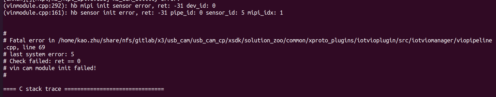
排查过程包括sensor模组、mipi线、使用的插槽是否正确
使用的插槽在configs/vio/x3dev/iot_vio_x3_*_1080p.json配置文件（*为具体的sensor名）的”host_index”配置项中指定，0表示靠近边缘的插槽，1表示靠近usb的插槽，具体如下：
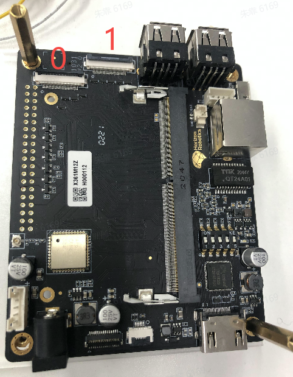
如果有备用sensor，可以直接换一个模组和mipi线进行验证
模型鉴权失败
如果使用的模型带有加密授权信息，开发板没有烧录授权文件或者授权文件不匹配，启动加载模型将会鉴权失败导致程序退出，具体现象如下：
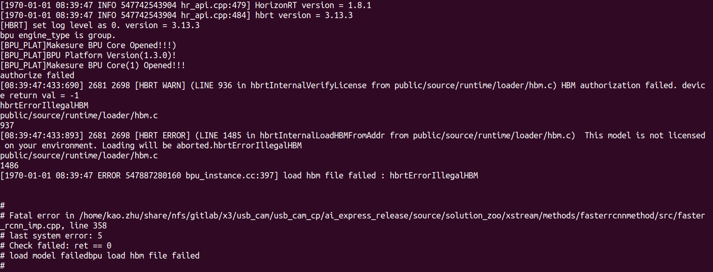
5.2 安卓启动失败（app退出）
先检查X3侧是否有异常，参考5.1节部分。
X3和安卓启动后，安卓端是否能ping通X3：ping192.168.100.100。安卓端是否识别到video设备：查看/dev/中是否有新增的video设备符号
使用ap sdk release包中的sample bin文件测试，验证接收X3侧的智能和视频数据是否正常。
5.3 X3和安卓启动成功，安卓获取图像失败
X3程序上一次异常退出，导致获取图像失败。解决方法：重启X3，具体现象为X3侧一直报vio错误。
5.4 安卓重复启停失败
安卓app第一次启动成功，之后app手动退出并再次启动存在启动失败的问题。
APP和X3在正常连接过程中，ap sdk会定时1秒向X3发送心跳消息，用于表示AP存活状态。
如果X3侧连续6秒收不到AP发送的心跳信号，认为APP已退出，开始启动模块退出流程。
如果app是非正常方式退出（未调用ap sdk的退出接口进行退出），退出后在6秒内再次启动，即X3侧在关闭模块的过程中收到启动命令，导致启动时序紊乱，AP收到启动失败消息。
解决方法：app退出时调用ap sdk的退出接口。如果是异常退出，间隔10秒以上再启动。